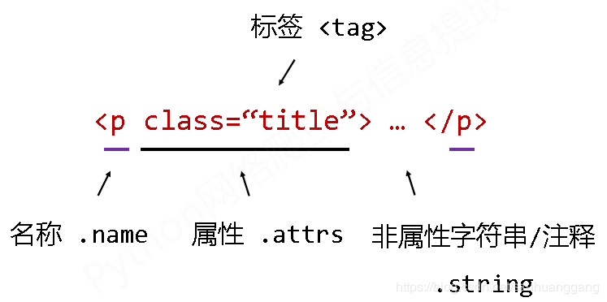

1. BeautifulSoup
[TOC]
from bs4 import BeautifulSoup
soup = BeautifulSoup('<p>data</p>', 'html.parser')
print(soup.prettify()) # 友好显示, 输出换行与前导空格
主要有4个解析器：
- bs4的html解析器：html.parser，需安装bs4
- lxml的html解析器：lxml，需安装lxml
- lxml的xml解析器：xml，需安装lxml
- html5lib的解析器：html5lib，需安装html5lib

下行遍历：
tag.contents：所有儿子节点组成的列表。tag.children：子节点的迭代类型。tag.descendants：子孙节点的迭代类型。
上行遍历：
tag. parent：节点的父标签。tag.parents：节点先辈标签的迭代类型。
平行遍历：
tag.next_sibling：按照html文本顺序，返回下一个平行节点标签。tag.next_siblings：返回所有后续的平行节点标签。tag.previous_siblingtag.previous_siblings
提取信息：
tag.find_all(name, attrs, recursive, string, **kwargs) # 返回一个bs4.element.Tag的列表
参数解释：
name：可以是关于标签的列表、正则表达式、函数（对tag进行过滤）
string：<>…</>中字符串区域的检索字符串（就是只检索非属性字符串）
tag(..) 等价于tag.find_all(..)
bs可以使用类似CSS的语法，tag.select(css)，tag是html中的一个element节点元素。